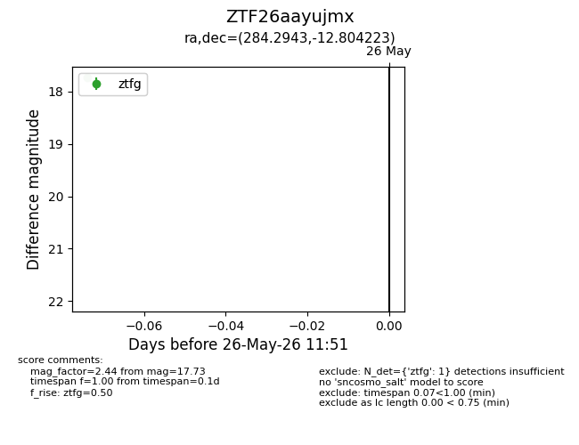
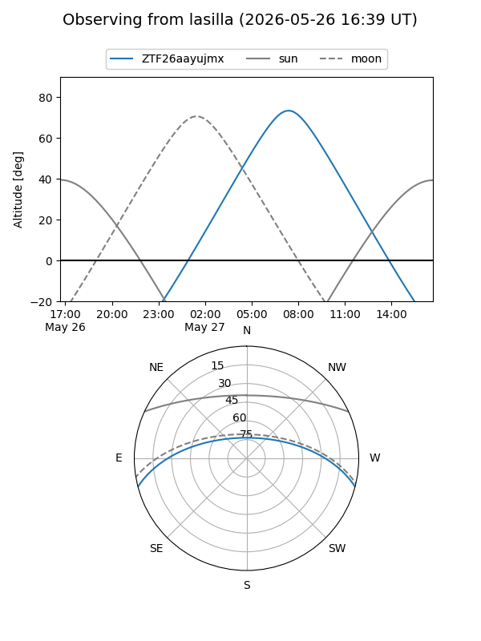
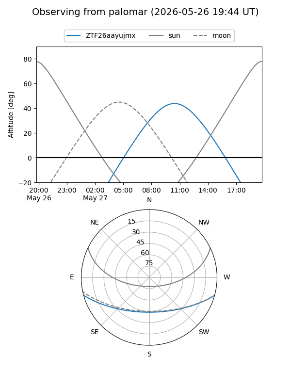

ZTF26aayujmx
Target ZTF26aayujmx at 2026-05-26 11:54
Aliases and brokers:
lsst-FINK: link
lsst-Lasair: link
lsst-ALeRCE: link
ztf-FINK: link
ztf-Lasair: link
ztf-ALeRCE: link
alt names
ZTF26aayujmx (ztf,fink_ztf)
Coordinates:
equatorial (ra, dec) = 284.2943,-12.80422
equatorial (HMS+DMS) = 18:57:10.62,-12:48:15.20
galactic (l, b) = (22.1235,-7.05289)
Flags:
Photometry:
last ztfg=17.73
1 ztfg detections
Lightcurve

Visibility


Additional plots